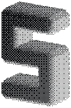
SEKUND
Brand kit
Mark A, the chamfer slab. Steel dither on black. Ink on paper. The 16 and 32 px files are the flat plan.
A hardware wallet you wear.
One zip. Profiles, banners, and the mark.
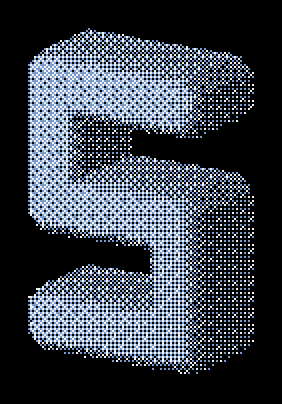
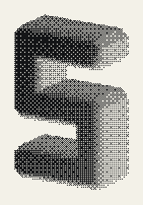
Profile pictures
Square files. The mark sits inside the circle a network will crop. The round sample on each card is that crop.


X


Discord


GitHub


YouTube


Apple touch


Web banners
Covers, link previews, a post, and a story. The line is the product. Dither stays on the mark.
Open Graph

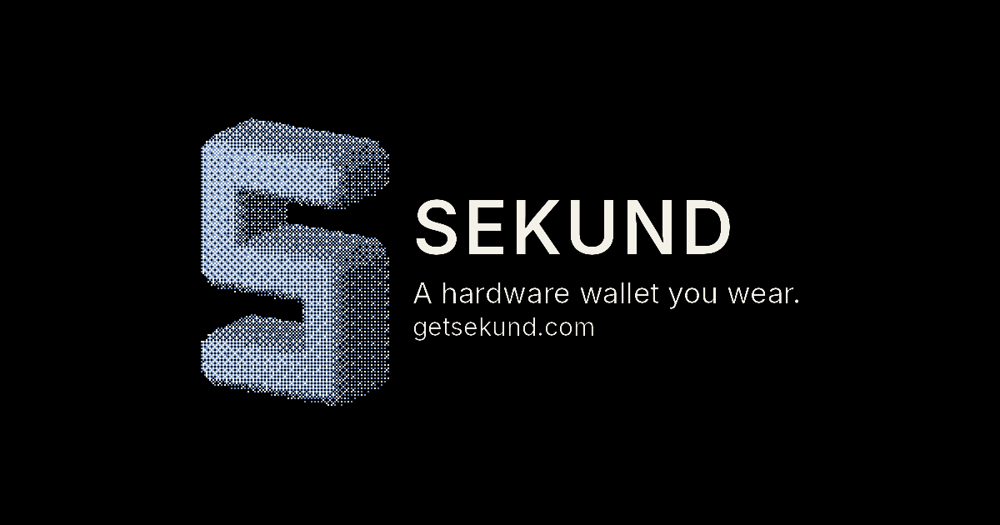

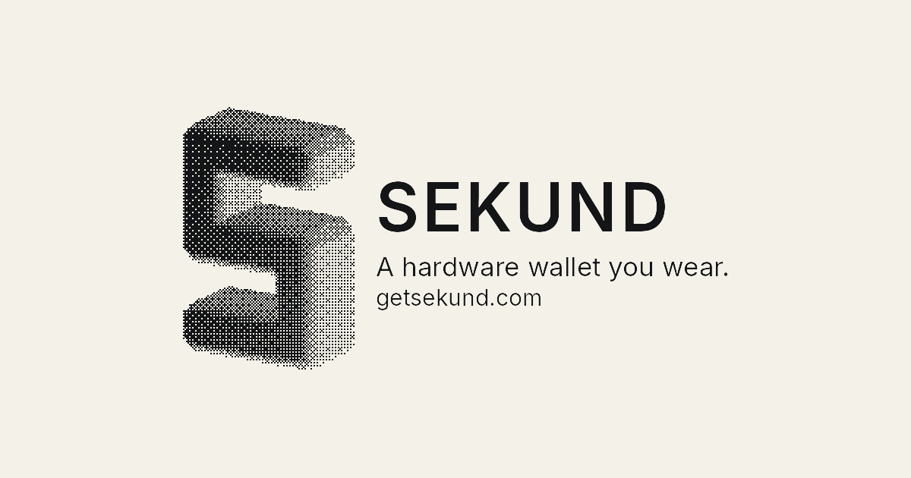
X header

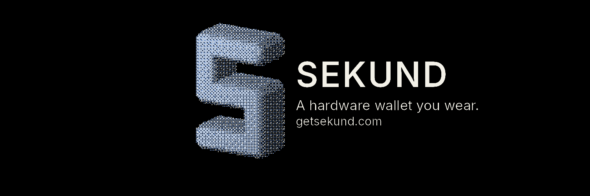

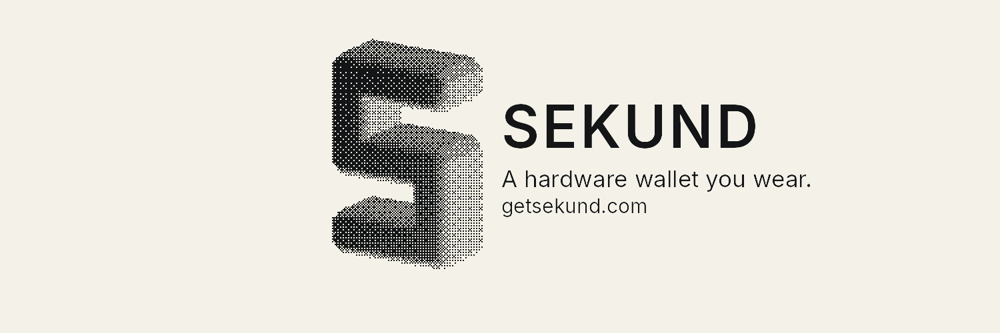
LinkedIn cover


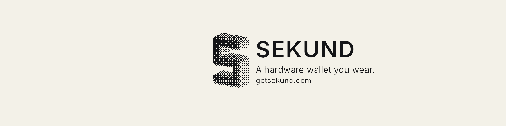
Facebook cover

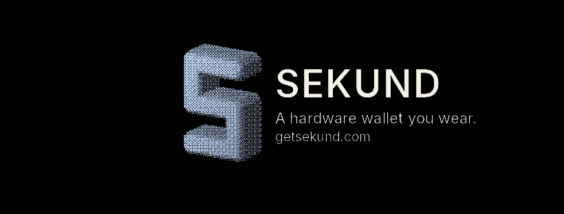

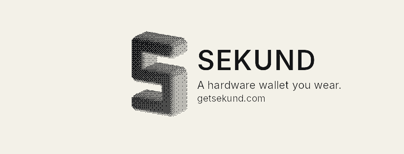
Discord

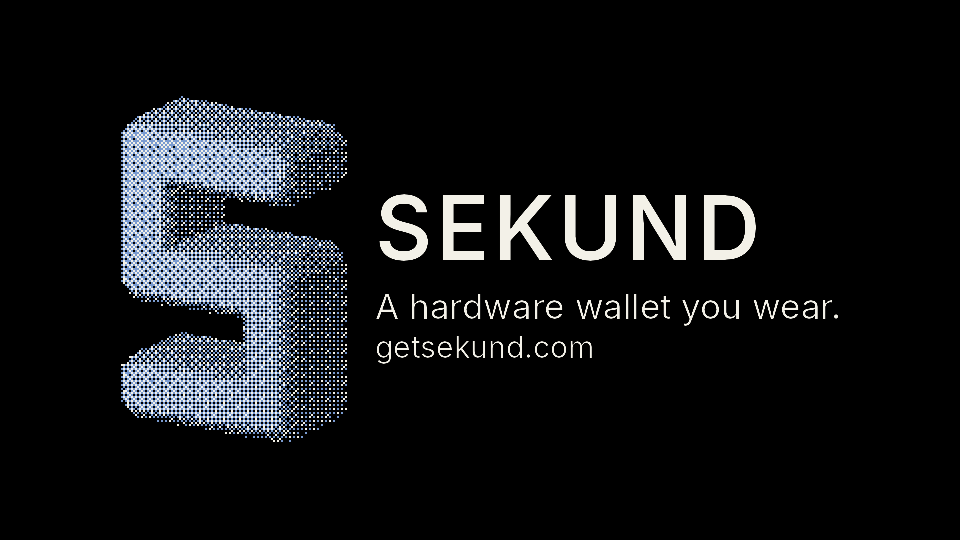

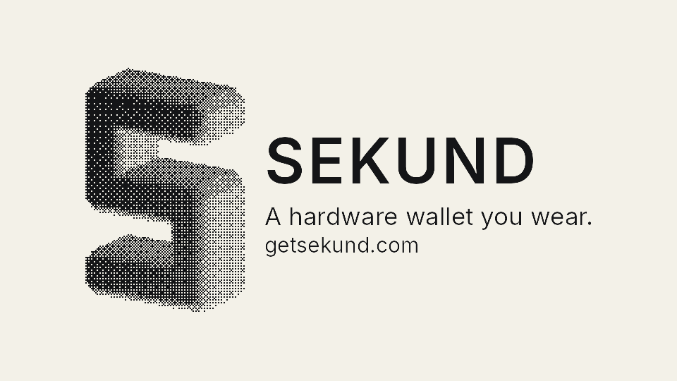
GitHub social

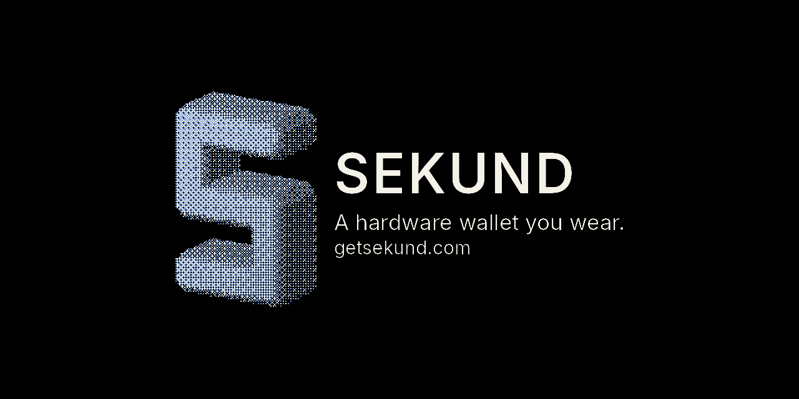

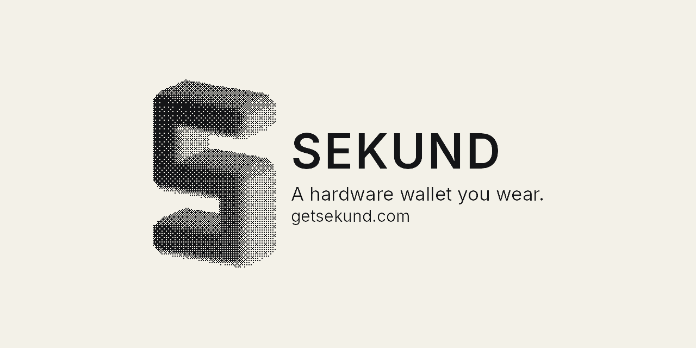
Web banner

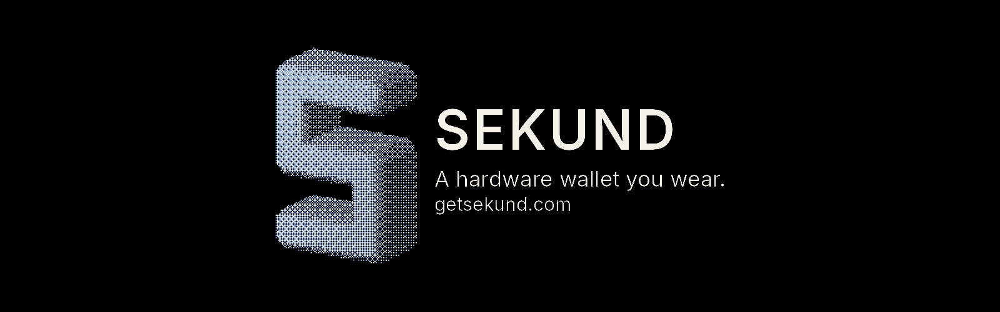

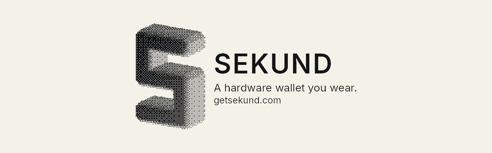
YouTube banner

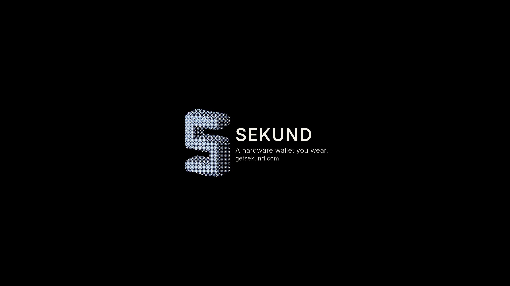

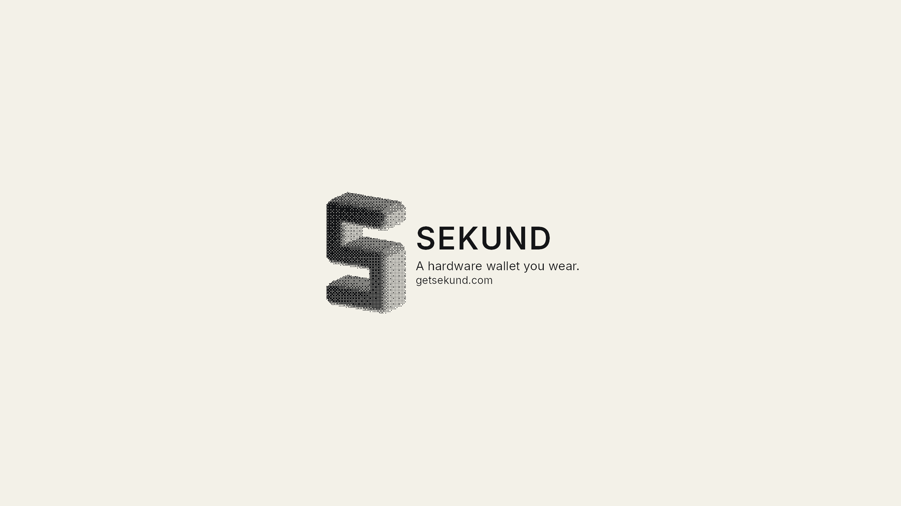
Post

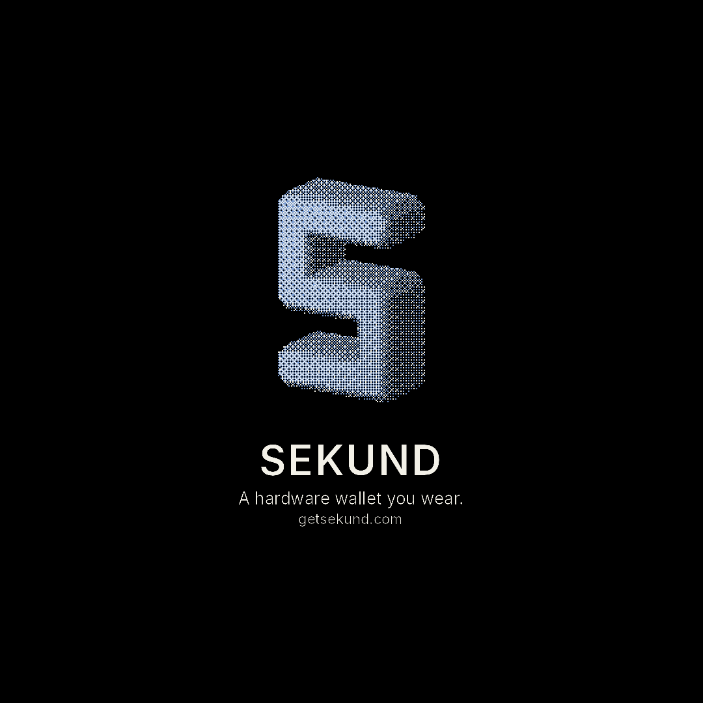

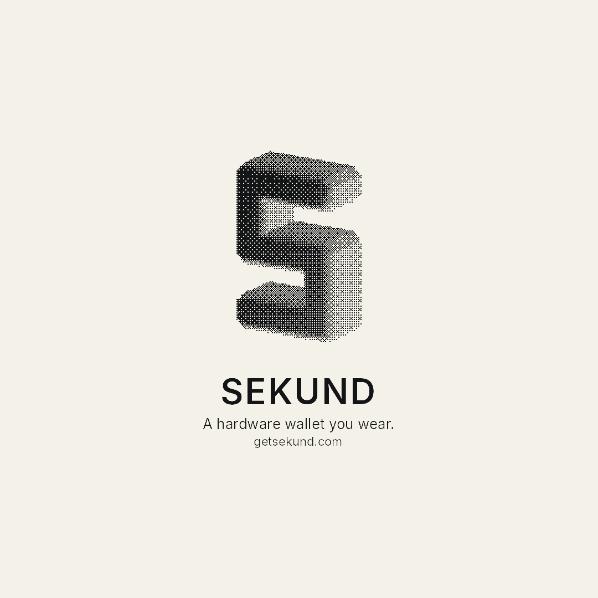
Story

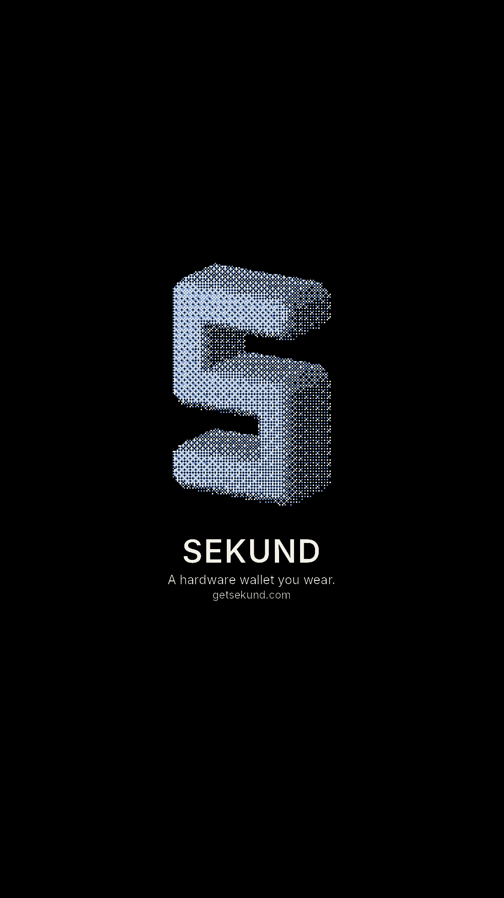

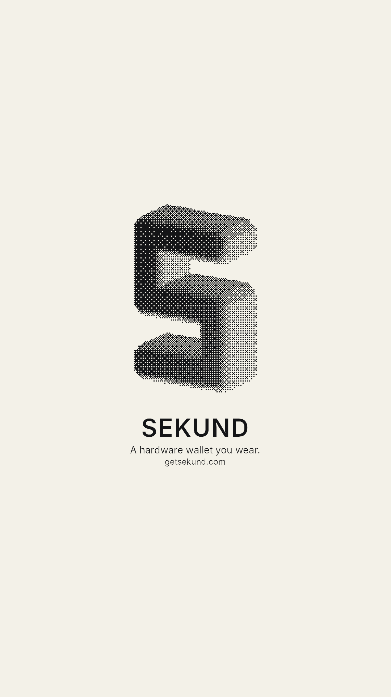
The mark
SVG and PNG, with the word and without. Favicons are the flat plan, transparent.
- Mark, steel, SVG
- Mark, ink, SVG
- Mark, steel, PNG, transparent
- Mark, ink, PNG, transparent
- Mark, steel, PNG, 2×
- Mark, ink, PNG, 2×
- Mark on black
- Mark on paper
- Lockup on black
- Lockup on paper
- App icon, 512, black
- Favicon, 32 px, transparent
- Favicon, 16 px, transparent
- Favicon, 32 px, SVG
- Favicon, 16 px, SVG
- Favicon, ICO


File list
SEKUND social pack Mark A, chamfer slab. A hardware wallet you wear. getsekund.com Black files are the steel dither on black. Paper files are the ink dither on paper. Profile pictures keep the mark inside a circle crop. 16 and 32 px files are the flat plan, for favicons. assets/profiles/master-1024-black.png 1024×1024 black assets/profiles/master-1024-paper.png 1024×1024 paper assets/profiles/x-400-black.png 400×400 black assets/profiles/x-400-paper.png 400×400 paper assets/profiles/instagram-320-black.png 320×320 black assets/profiles/instagram-320-paper.png 320×320 paper assets/profiles/linkedin-800-black.png 800×800 black assets/profiles/linkedin-800-paper.png 800×800 paper assets/profiles/discord-128-black.png 128×128 black assets/profiles/discord-128-paper.png 128×128 paper assets/profiles/github-500-black.png 500×500 black assets/profiles/github-500-paper.png 500×500 paper assets/profiles/youtube-800-black.png 800×800 black assets/profiles/youtube-800-paper.png 800×800 paper assets/profiles/apple-touch-180-black.png 180×180 black assets/profiles/apple-touch-180-paper.png 180×180 paper assets/banners/og-1200x630-black.png 1200×630 black assets/banners/og-1200x630-paper.png 1200×630 paper assets/banners/x-header-1500x500-black.png 1500×500 black assets/banners/x-header-1500x500-paper.png 1500×500 paper assets/banners/linkedin-1584x396-black.png 1584×396 black assets/banners/linkedin-1584x396-paper.png 1584×396 paper assets/banners/facebook-820x312-black.png 820×312 black assets/banners/facebook-820x312-paper.png 820×312 paper assets/banners/discord-960x540-black.png 960×540 black assets/banners/discord-960x540-paper.png 960×540 paper assets/banners/github-1280x640-black.png 1280×640 black assets/banners/github-1280x640-paper.png 1280×640 paper assets/banners/web-1600x500-black.png 1600×500 black assets/banners/web-1600x500-paper.png 1600×500 paper assets/banners/youtube-2560x1440-black.png 2560×1440 black assets/banners/youtube-2560x1440-paper.png 2560×1440 paper assets/banners/post-1080-black.png 1080×1080 black assets/banners/post-1080-paper.png 1080×1080 paper assets/banners/story-1080x1920-black.png 1080×1920 black assets/banners/story-1080x1920-paper.png 1080×1920 paper assets/mark/sekund-mark-steel.svg Mark, steel, SVG assets/mark/sekund-mark-ink.svg Mark, ink, SVG assets/mark/sekund-mark-steel.png Mark, steel, PNG, transparent assets/mark/sekund-mark-ink.png Mark, ink, PNG, transparent assets/mark/sekund-mark-steel@2.png Mark, steel, PNG, 2× assets/mark/sekund-mark-ink@2.png Mark, ink, PNG, 2× assets/mark/sekund-mark-on-black.png Mark on black assets/mark/sekund-mark-on-paper.png Mark on paper assets/mark/sekund-lockup-black.png Lockup on black assets/mark/sekund-lockup-paper.png Lockup on paper assets/mark/sekund-icon-512.png App icon, 512, black assets/mark/favicon-32.png Favicon, 32 px, transparent assets/mark/favicon-16.png Favicon, 16 px, transparent assets/mark/favicon-32.svg Favicon, 32 px, SVG assets/mark/favicon-16.svg Favicon, 16 px, SVG assets/mark/favicon.ico Favicon, ICO